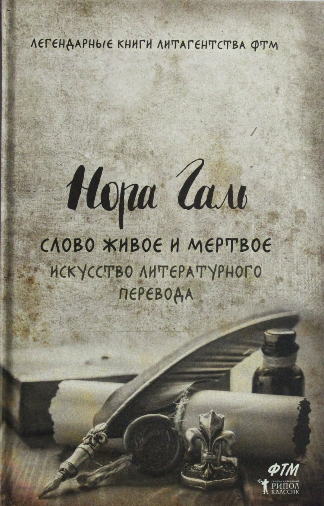

Добро пожаловать на книжную раздачу!
Еженедельно мы публикуем книжные новинки и обзоры на них от наших партнеров - действующих писаталей!
Выпуск № 245 от 04.03.2024
Аннотация:
Образ мистера Пиквика, обаятельного нелепого чудака, давно приобрел литературное бессмертие наравне с Дон Кихотом, Тартюфом и Хлестаковым. Роман "Посмертные записки Пиквикского клуба" вышел в свет отдельным изданием в 1837 году и сразу же сделал Чарльза Диккенса знаменитым. Эту веселую, полную великолепного английского юмора историю о симпатичных джентльменах, путешествующих по стране, любят читатели во всем мире.
Скачать
Аннотация:
Представляем читателю один из самых поразительных романов начала XXI века (в 2015 году получивший долгожданное продолжение - "Тень горы"). Эта преломленная в художественной форме исповедь человека, который сумел выбраться из бездны и уцелеть, разошлась по миру тиражом четыре миллиона экземпляров (из них полмиллиона - в России) и заслужила восторженные сравнения с произведениями лучших писателей Нового времени, от Мелвилла до Хемингуэя. Подобно автору, герой этого романа много лет скрывался от закона. Лишенный после развода с женой родительских прав, он пристрастился к наркотикам, совершил ряд ограблений и был приговорен австралийским судом к девятнадцати годам заключения. Бежав на второй год из тюрьмы строгого режима, он добрался до Бомбея, где был фальшивомонетчиком и контрабандистом, торговал оружием и участвовал в разборках индийской мафии, а также нашел свою настоящую любовь, чтобы вновь потерять ее, чтобы снова найти...
Скачать

Аннотация:
Нора Галь - блистательный переводчик и литератор, представительница самой, пожалуй, авторитетной в нашей стране Кашкинской переводческой школы. Нора Галь снискала себе заслуженную славу не только в профессиональных, но и в широких читательских кругах. Слово Норы Галь выходит далеко за рамки собственно перевода. Так, разбирая ошибки и огрехи, проникающие в прозу, публицистику, на радио и телевидение и противопоставляя им прекрасные образцы живой русской речи, Нора Галь внесла весомый вклад в столь актуальную ныне борьбу за чистоту и достоинство русского языка.
Скачать